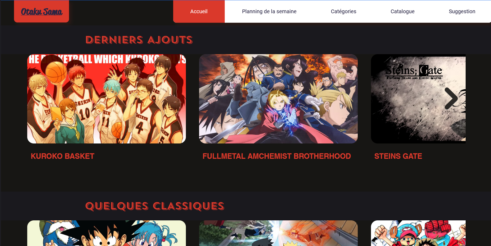
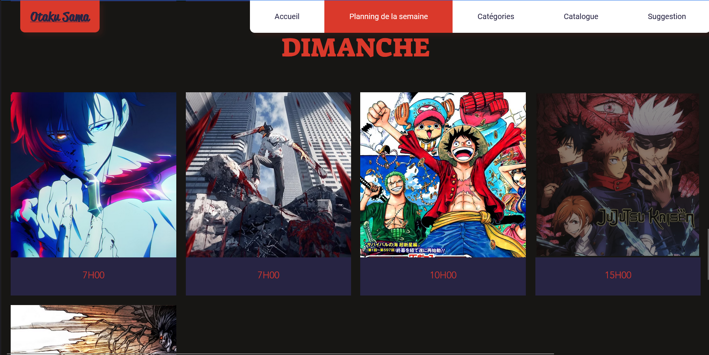
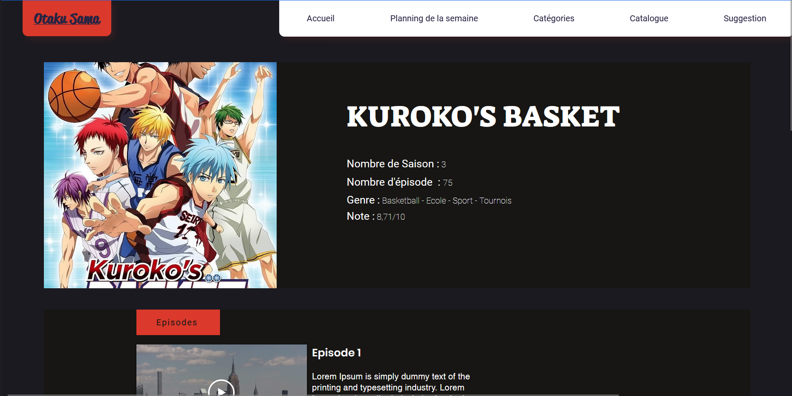
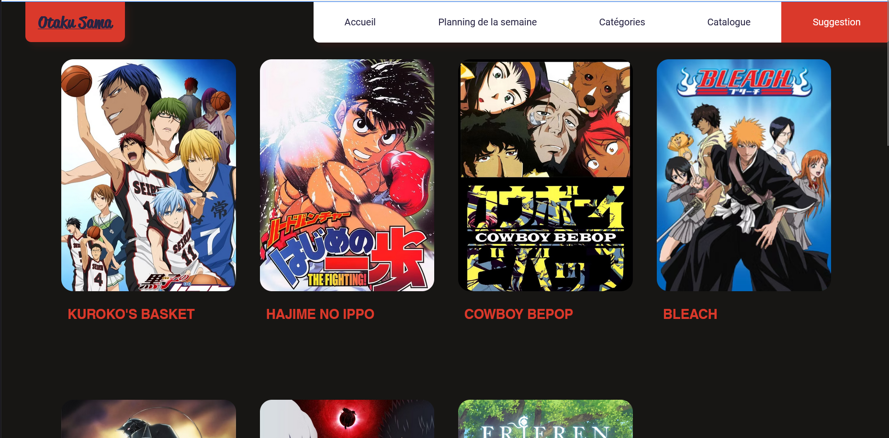

Contexte
Dans le cadre d'un projet académique de web design, l'objectif était de concevoir un site web complet avec une vraie logique produit. Passionné d'animé, je me suis inspiré du site de streaming Anime Sama pour créer Otaku Sama, une plateforme de streaming animé dédiée au public togolais et francophone.
L'idée était de reproduire l'expérience d'une vraie plateforme de streaming : catalogue organisé, navigation intuitive, planning des sorties et système de suggestions communautaires.
Problématique
Comment concevoir une plateforme de streaming animé complète et intuitive sur Wix avec un catalogue multi-catégories, un planning hebdomadaire, une section films et un système de suggestions en offrant une expérience utilisateur cohérente et agréable ?
Solution développée
Conception et déploiement d'une plateforme de streaming animé complète sur Wix, structurée autour de 5 axes :
- Catalogue & Catégories — Organisation du contenu en 5 catégories (Shonen, Seinen, Sport, Drame, Romance) avec pages dédiées et sélections mises en avant (Derniers ajouts, Classiques, Pépites, Films).
- Planning hebdomadaire — Page dédiée au planning des sorties de la semaine pour permettre aux utilisateurs de suivre les nouveaux épisodes.
- Système de suggestions — Page de recommandations personnalisées permettant aux visiteurs de trouver un animé à regarder selon leurs préférences et leur type d'animé favori.
- Présence sociale — Intégration des réseaux sociaux (Discord, Twitch, YouTube, Facebook, Twitter, LinkedIn) pour construire une communauté autour de la plateforme.
- Navigation & UX — Architecture de navigation claire avec menu principal, footer complet (réseaux sociaux, mentions légales, politique de cookies) et pages légales conformes.
Résultats
- Plateforme de streaming complète livrée et déployée sur Wix
- 5 catégories d'animés avec pages et sélections dédiées
- Planning hebdomadaire et système de recommandations personnalisées intégrés
- Navigation multi-pages fluide et expérience utilisateur cohérente
- Premier projet de product design complet de A à Z
Ce que j'ai appris
Ce projet m'a appris à penser en termes de product design plutôt que de simple web design — structurer un catalogue, organiser la navigation, anticiper les besoins des utilisateurs et créer une vraie cohérence éditoriale. M'inspirer d'Anime Sama m'a aussi appris à analyser et décortiquer l'UX d'un produit existant pour en reproduire les principes clés avec mes propres moyens.
Aperçu du projet

Page Accueil — Derniers ajouts, classiques, pépites et films

Planning hebdomadaire — Programmation par jour et horaire

Fiche animé — Détails, saisons, épisodes et player intégré

Page Suggestion — Recommandations personnalisées